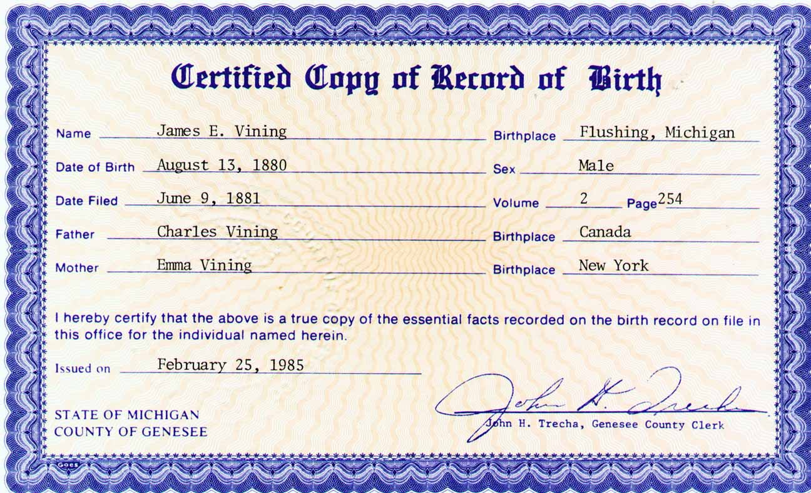
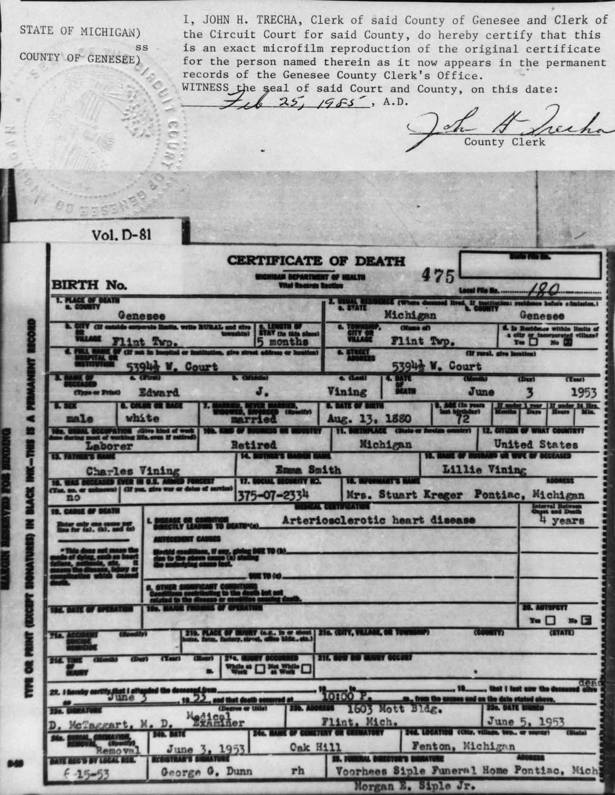
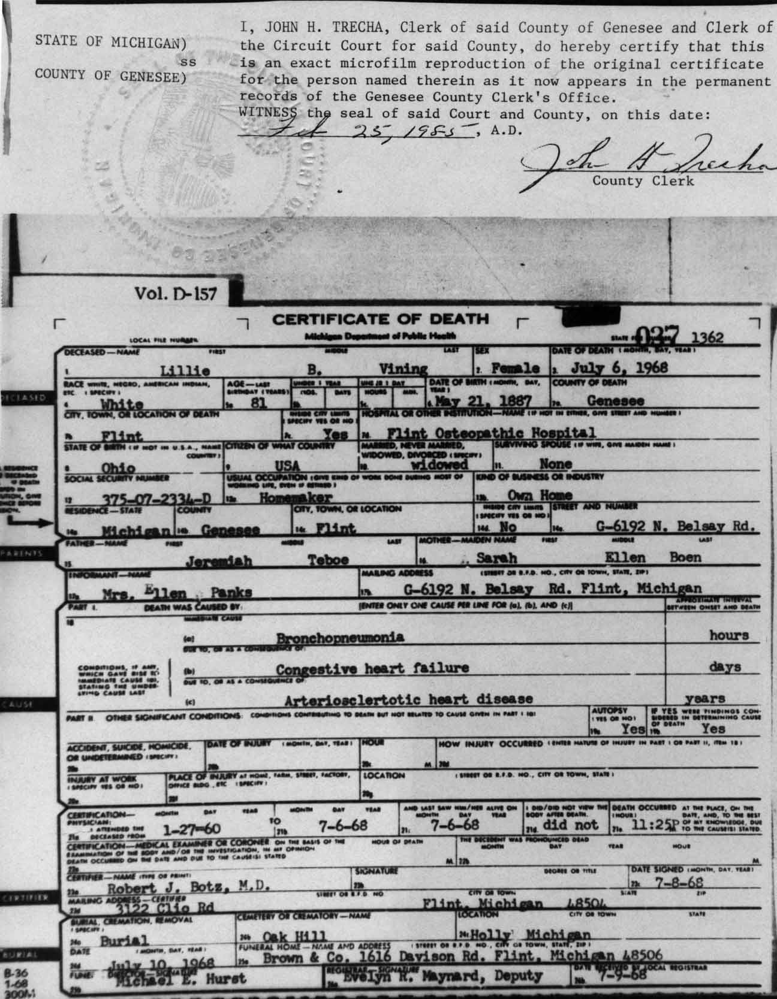
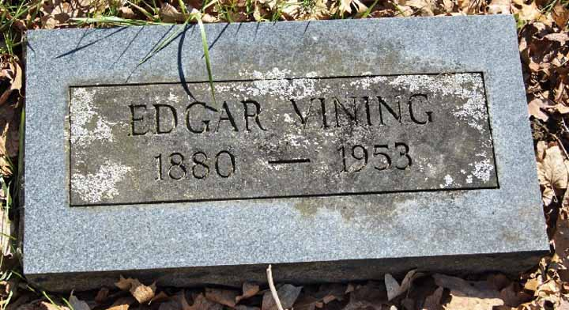
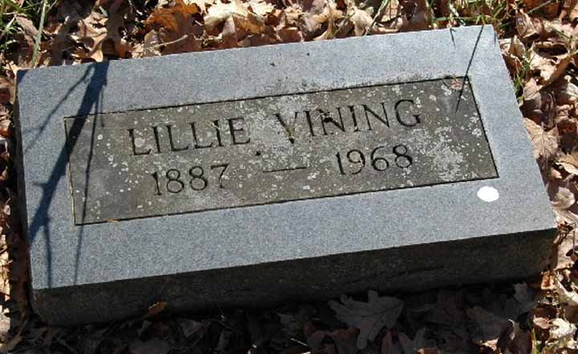
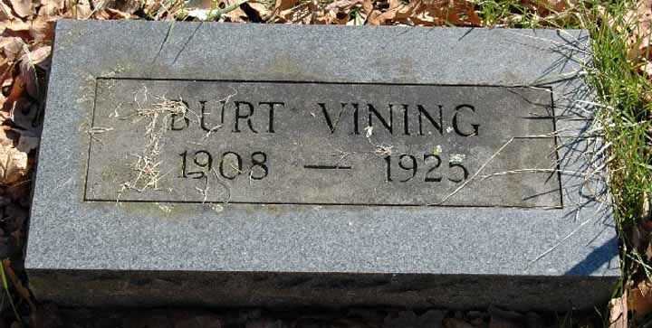

Documentation for James Edward “Edgar” Vining - Lillie Belle Teboe
Birth Data
Birth record for James Edward “Edgar” Vining:

Death Data
Death certificate for James Edward “Edgar” Vining:

Death certificate for Lillie Belle (Teboe) Vining:

Gravestones for James Edward “Edgar” Vining and Lillie Belle Teboe and their son, Burt Vining, in the Oakhill Cemetery in Holly, Michigan:


